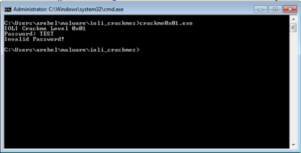
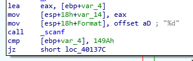
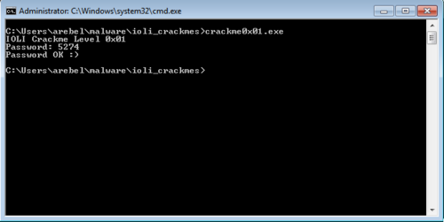

I am continuing my reverse engineering review by tackling the IOLI crackmes by @pof. These are beginner friendly challenges that is perfect for newbies or for those who want to review the basics like me. Check out my writeup for 0x00 here.
Getting the password
Of course, the first thing we do is run the program.

Just like last time, we opened up the program in IDA and focused on the part of the code that does the comparing of passwords.

cmp [ebp+var_4], 149Ah
jz short loc_40137c
This seems easy enough.
Initially I entered 149A as the password but this turned out to be incorrect. The reason for this is because scanf was passed a format of "%d".
mov [esp+18h+Format], offset aD ; "%d"
call _scanf
This means that the input it expects is actually a decimal integer. So converting 149A to decimal results in 5274, which is the correct password.

Patching the executables
Patching the executable is actually the same process as my writeup for 0x00.
Passing arguments to functions
Since the crackme was cracked relatively quickly I want to review and highlight how arguments are passed to functions.
The format of the scanf function in C is like so:
int scanf ( const char * format, ... );
Here's an example of how it is used:
int i;
scanf ("%d",&i);
If we look at the 0x01 program we could see how the arguments are passed to the _scanf function by placing the data to send on top of the stack.
lea eax, [ebp+var_4]
mov [esp+18h+var_14], eax
mov [esp+18h+Format], offset aD; "%d"
call _scanf
lea eax, [ebp+var_4] gets the address of var_4, this is the memory location where scanf would put the inputted data. This is then added to the stack with mov [esp+18h+var_14].
offset aD gets the address of aD which contains the string "%d". This is the format parameter that scanf expects. This is then added to the stack with mov [esp+18h+Format].
With the two parameters added to the stack, it can now be used by the scanf function when call _scanf is executed.
I'm not sure if I was able to explain that properly. At the very least, you should have been able to have a basic idea of how variables are passed to functions. Take note, however, that there are other calling conventions for functions which meants that the passing of arguments can also differ.
On to the next challenge...
This is the second challenge out of 10 in the IOLI series of challenges. So far the challenges are still very easy, which is fine because it's still good for practice. I look forward to the next one.